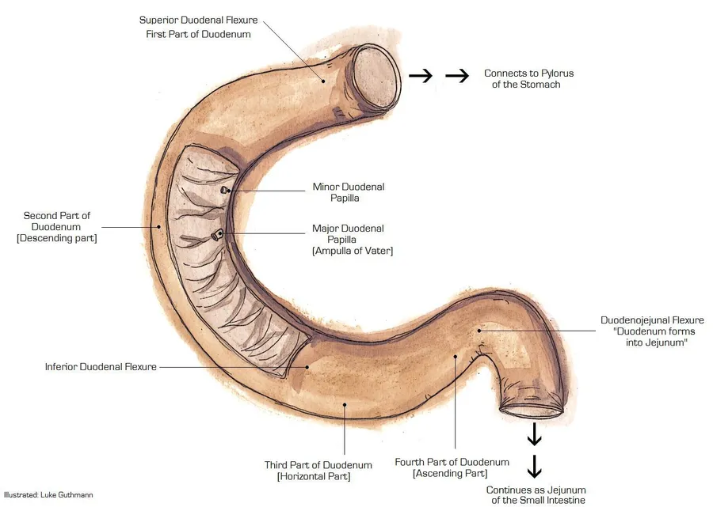
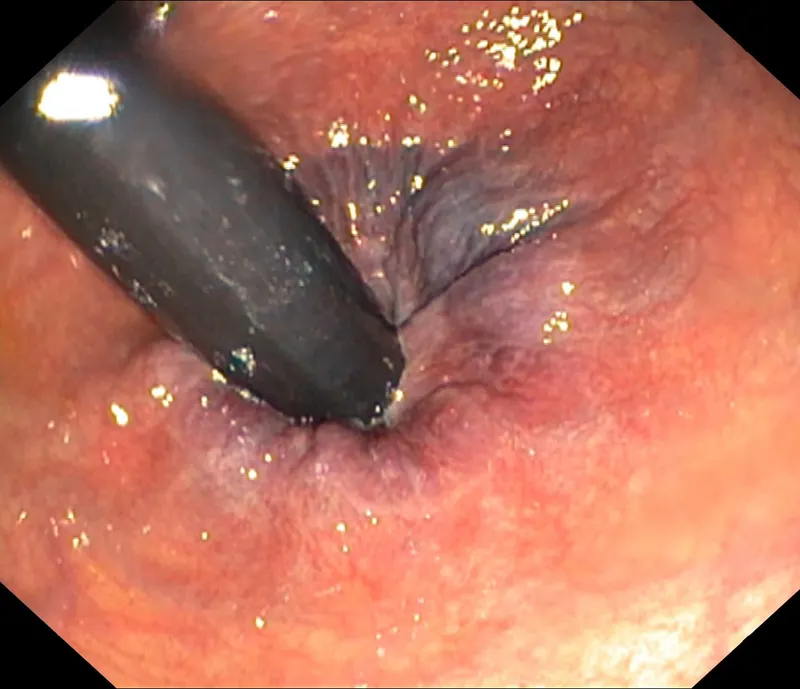

Hémorragie digestive aiguë
Phase A · cadre clinique, dix diagnostics concurrents et conduite suisse, du cabinet aux urgences
Dix diagnostics, dans l’ordre de fréquence retenu
La liste suit les séries suisses : d’abord les causes hautes, quatre fois plus fréquentes, puis les 2 premières causes basses, avec leur part propre[2].
- DX.1 — ulcère gastroduodénal 38 % 🚩 E1 ulcère Forrest Ia, hémorragie massiveIl ouvre la liste parce qu’il cause 38 % des hémorragies hautes, et son jet artériel tue en minutes[2].
- DX.2 — varices œsophagiennes ou gastriques 16 % 🚩 E1 rupture variqueuse, choc hémorragiqueElles font 16 % des sources hautes, et la cirrhose les annonce[2].
- DX.3 — œsophagite 13 %Elle explique 13 % des saignements hauts, le plus souvent modestes et contrôlés par un inhibiteur de la pompe à protons[2].
- DX.4 — tumeur digestive haute 7 %Une tumeur de l’œsophage, de l’estomac ou du duodénum donne 7 % des hémorragies hautes et alourdit le score de Rockall[2].
- DX.5 — angiodysplasie 6 %Ces ectasies vasculaires fournissent 6 % des sources hautes et reviennent aussi dans le côlon, où l’argon les ferme[2].
- DX.6 — lésion de Mallory-Weiss 4 %Cette déchirure muqueuse suit un vomissement violent et pèse 4 % des hémorragies hautes[2].
- DX.7 — érosions gastroduodénales 4 %Des érosions superficielles expliquent encore 4 % des cas hauts, souvent sous anti-inflammatoire[2].
- DX.8 — lésion de Dieulafoy 2 %Une artère sous-muqueuse anormalement large perce la muqueuse gastrique proximale et cause 2 % des saignements hauts[2].
- DX.9 — hémorragie diverticulaireElle domine parmi les hémorragies basses, avec 20 à 48 % de ce groupe quatre fois plus rare que le haut[2].
- DX.10 — coliteIschémique, infectieuse, inflammatoire ou radique, elle représente 6 à 21 % parmi les hémorragies basses[2].
Rangs E : l’ulcère Forrest Ia et la rupture variqueuse tuent en minutes et ouvrent l’arbre ; la fistule aorto-entérique, rare, se cherche dès qu’une prothèse aortique est connue[2].
1. Définition
La classification suisse de 2010 sépare l’hémorragie haute, née en amont du , de l’hémorragie basse, née en aval[1].
En haut, le saignement vient de l’œsophage, de l’estomac ou du duodénum ; en bas, il vient du grêle, du côlon, du rectum ou de l’anus[1].
L’hématémèse est le sang vomi, tandis que le méléna correspond à des selles noires faites de sang déjà digéré[1].
Un vomissement couleur « marc de café » trahit en règle un saignement mineur, car le sang a stagné dans l’acide gastrique[1].
La rectorragie correspond à l’émission par l’anus de sang rouge et de caillots ; elle signe d’ordinaire une source basse[1].
L’hématochézie, émission de sang rouge mêlé aux selles, reste le mode de présentation le plus habituel des hémorragies basses[2].
La couleur seule trompe donc souvent. Pourtant une hémorragie haute massive peut aussi se présenter par des selles rouges ; l’instabilité hémodynamique est alors toujours présente[1].
À l’inverse, un méléna reste rare dans une hémorragie colique, sauf saignement mineur chez un patient constipé[1].
Ligament de Treitz : la frontière haut–bas

Le dessin suit le cadre duodénal depuis le pylore jusqu’à l’angle de Treitz, où commence le jéjunum[16].
C’est à cet angle, suspendu par le ligament de Treitz, que passe la limite entre hémorragie haute et hémorragie basse[1].
La deuxième portion porte la papille ; un saignement de cette zone reste haut, accessible au gastroscope standard[16].
Au-delà de l’angle commence le grêle, que l’œsogastroduodénoscopie n’atteint plus : il faut alors la vidéo-capsule ou l’entéroscopie[1].
Ce dessin vient de Luke Guthmann et reste sous licence CC BY-SA 3.0 sur Wikimedia Commons, consulté le 11.11.2026[16].
2. Épidémiologie en Suisse, puis en Europe
Selon le Forum Médical Suisse de 2015, l’incidence annuelle des hémorragies hautes atteint environ 1/1000, avec une mortalité proche de 13 %[2].
Le haut dépasse donc nettement le bas. Les hémorragies basses sont environ quatre fois plus rares, 1/4000 par an, et leur mortalité tombe à 2 à 4 %[2].
Ces chiffres proviennent de séries publiées que cite la revue suisse, et non d’un registre national[2].
Parmi les causes hautes, l’ulcère gastroduodénal vient en tête avec 38 %, devant les varices œsophagiennes ou gastriques, 16 %[2].
Suivent l’œsophagite, 13 %, puis la tumeur, 7 %, et l’angiodysplasie, 6 %[2].
La lésion de Mallory-Weiss et les érosions comptent chacune pour 4 %, la lésion de Dieulafoy pour 2 %, et aucune cause n’apparaît dans 8 % des cas[2].
Le bas obéit à un autre ordre. Dans le bas, l’hémorragie diverticulaire domine avec 20 à 48 %, tandis que l’angiodysplasie varie entre 3 et 40 % selon les séries[2].
Le côlon varie donc davantage que l’estomac. Les colites pèsent 6 à 21 %, les tumeurs et polypes 6 à 15 %, et les causes anorectales comme les hémorroïdes 3 à 14 %[2].
Chez 10 à 15 % des patients qui évacuent une hématochézie, la source est pourtant haute, ce qui change le premier examen[2].
Après une première gastroscopie et une coloscopie, environ 5 % des patients restent sans source visible[1].
De plus, 23 % des patients adressés pour une entéroscopie à double ballon portent une lésion haute que la première gastroscopie n’avait pas vue[1].
Environ 50 % des saignements diverticulaires naissent dans le côlon droit, alors que les diverticules dominent à gauche[1].
Le terrain à risque réunit la cirrhose, les anti-inflammatoires non stéroïdiens, les anticoagulants et l’âge avancé, que le score de Rockall pondère[2].
| Cause | Part | Groupe de référence | Source |
|---|---|---|---|
| Ulcère gastroduodénal | 38 % | Hémorragies hautes | Forum Médical Suisse, 2015 |
| Varices œsophagiennes ou gastriques | 16 % | Hémorragies hautes | Forum Médical Suisse, 2015 |
| Œsophagite | 13 % | Hémorragies hautes | Forum Médical Suisse, 2015 |
| Tumeur | 7 % | Hémorragies hautes | Forum Médical Suisse, 2015 |
| Angiodysplasie | 6 % | Hémorragies hautes | Forum Médical Suisse, 2015 |
| Mallory-Weiss, érosions | 4 % chacune | Hémorragies hautes | Forum Médical Suisse, 2015 |
| Dieulafoy | 2 % | Hémorragies hautes | Forum Médical Suisse, 2015 |
| Hémorragie diverticulaire | 20 à 48 % | Hémorragies basses | Forum Médical Suisse, 2015 |
| Colite | 6 à 21 % | Hémorragies basses | Forum Médical Suisse, 2015 |
| Sans source après 2 examens | Environ 5 % | Gastroscopie et coloscopie faites | Revue médicale suisse, 2010 |
3. Physiopathologie
Le sang qui séjourne dans l’intestin est dégradé par les bactéries en hématine, ce qui noircit les selles en 4 à 20 heures[2].
Comme cette chimie demande du temps, un saignement du côlon droit au transit lent peut, lui aussi, produire un méléna[2].
Les selles noires durent parfois 5 jours après la fin du saignement ; le méléna ne prouve donc pas une hémorragie encore active[2].
Le débit change alors toute la lecture. Un débit haut très abondant traverse au contraire l’intestin avant cette transformation, d’où des selles rouges et un patient instable[1].
Les composants du sang résorbés dans le grêle élèvent l’urée, si bien qu’elle est plus haute dans les hémorragies hautes que dans les basses[2].
Le chiffre initial ment donc souvent. Au début, l’hémoglobine peut rester normale faute d’hémodilution ; après l’arrêt du saignement, elle peut encore baisser sans nouvelle perte[2].
L’ulcère se nourrit de la prise d’anti-inflammatoires non stéroïdiens, que l’anamnèse doit toujours chercher devant une douleur épigastrique[2].
Lorsqu’Helicobacter pylori entretient l’ulcère, l’éradication de la bactérie suit la stabilisation de l’hémorragie[1].
Ici, le danger devient immédiat. Lorsque l’ulcère érode un vaisseau, le jet est artériel : c’est le stade Forrest Ia, qui tue par choc en quelques minutes[2].
La varice traduit donc une pression portale élevée. La cirrhose élève la pression portale, si bien que des collatérales sous-muqueuses se dilatent dans l’œsophage et l’estomac jusqu’à la rupture[2].
Le vomissement répété déchire la muqueuse de la jonction œso-gastrique ; c’est la lésion de Mallory-Weiss, qui saigne puis cicatrise souvent seule[2].
La lésion de Dieulafoy est une anomalie congénitale : une artère trop large court sous la muqueuse et saigne par un orifice minuscule[2].
Dans le côlon, l’artériole du collet diverticulaire se rompt, puis le saignement s’arrête en général spontanément[1].
Enfin, une prothèse aortique peut s’aboucher dans l’intestin ; cette fistule aorto-entérique reste rare, mais elle saigne massivement[2].
Ainsi, la guide le choix du premier endoscope, avant même la biologie[2].
| Mécanisme | Ce que l’on voit | Conséquence |
|---|---|---|
| Hématine formée en 4 à 20 h | Méléna | Gastroscopie d’abord si le niveau est douteux |
| Transit haut très rapide | Selles rouges avec choc | Traiter comme une source haute |
| Pression portale → varices | Hématémèse sur cirrhose | Vasoactif avant l’endoscopie |
| Ulcère qui érode une artère | Jet Forrest Ia | Hémostase endoscopique combinée |
| Déchirure après vomissements | Sang après des efforts de vomissement | Inhibiteur de la pompe à protons, rarement un geste |
| Rupture d’une artériole diverticulaire | Hématochézie indolore | Coloscopie après préparation |
| Sang digéré dans le grêle | Urée élevée | Argument pour une source haute |
Du vaisseau à la couleur des selles
Le premier repère est le temps : l’hématine apparaît entre 4 et 20 heures après le début du saignement[2].
Le deuxième repère est le débit, puisqu’un vomissement de sang frais associé à un méléna liquide signe une perte modérée à sévère[2].
Le troisième repère est le site, car le côlon droit lent peut noircir un sang venu d’aval[2].
Le patient se trompe souvent d’heure. Le piège consiste à dater le début du saignement à l’heure des premières selles noires, alors qu’il a commencé plusieurs heures plus tôt[2].
Un autre piège tient à la durée : les selles peuvent rester noires 5 jours sans que le patient saigne encore[2].
Devant un doute, l’urée élevée et le vomissement de sang orientent vers le haut, alors que le toucher rectal confirme la couleur[2].
4. Démarche diagnostique
La démarche commence par ce qui tue en minutes : l’ulcère qui saigne en jet et la rupture variqueuse, tous deux classés E1[2].
Le pouls passe avant tout le reste. Avant toute question de siège, on mesure le pouls, la pression et leur variation orthostatique, puis on pose deux voies veineuses[2].
Ensuite, l’anamnèse oriente vers une cause précise : cirrhose, vomissements préalables, douleur épigastrique, anti-inflammatoires ou prothèse aortique[2].
Le siège se déduit de la présentation : hématémèse ou méléna pour le haut, rectorragie pour le bas, sauf choc qui fait remonter la source[1].
Si le niveau reste incertain, la gastroscopie précède toujours la coloscopie, parce que 10 à 15 % des hématochézies viennent d’en haut[2].
Le score de Glasgow-Blatchford trie ensuite les patients qui peuvent rentrer de ceux qu’il faut hospitaliser et endoscoper tôt[3].
Lorsque gastroscopie et coloscopie restent muettes, on les répète si la préparation était insuffisante, puis on explore le grêle[1].
| Diagnostic | Signe clé | Examen qui tranche | Mécanisme | Conduite immédiate | Rang E |
|---|---|---|---|---|---|
| DX.1 ulcère gastroduodénal | Douleur épigastrique, AINS, méléna | Gastroscopie | Érosion d’une artère de la paroi | IPP intraveineux, hémostase endoscopique | E1 si jet |
| DX.2 varices œsophagiennes ou gastriques | Hématémèse sur cirrhose | Gastroscopie dès que possible | Hypertension portale | Vasoactif, antibiotique, ligature | E1 |
| DX.3 œsophagite | Reflux, saignement modeste | Gastroscopie | Inflammation de la muqueuse | IPP, rarement un geste | Hors E |
| DX.4 tumeur digestive haute | Amaigrissement, dysphagie | Gastroscopie et biopsies | Tumeur ulcérée | Hémostase, puis bilan oncologique | Hors E |
| DX.5 angiodysplasie | Saignement récidivant, anémie | Endoscopie | Ectasie vasculaire fragile | Coagulation à l’argon | Hors E |
| DX.6 lésion de Mallory-Weiss | Sang après vomissements | Gastroscopie | Déchirure de la jonction | IPP, geste rare | Hors E |
| DX.7 érosions gastroduodénales | Prise d’AINS | Gastroscopie | Atteinte superficielle | Arrêt de l’AINS si possible | Hors E |
| DX.8 lésion de Dieulafoy | Hématémèse abondante sans ulcère | Gastroscopie répétée | Artère sous-muqueuse large | Hémostase endoscopique | Hors E |
| DX.9 hémorragie diverticulaire | Hématochézie indolore | Coloscopie après préparation | Rupture d’une artériole du collet | Surveillance, geste si saignement actif | Hors E |
| DX.10 colite | Diarrhée et douleur | Coloscopie et biopsies | Muqueuse inflammatoire | Traitement de la cause | Hors E |
5. Anamnèse ciblée et drapeaux rouges
On commence par dater le premier sang, compter les selles et noter tout vomissement, puisque le délai et la couleur situent l’étage[2].
La question de la cirrhose ou de ses facteurs de risque vient tôt, car elle fait suspecter des varices et change les médicaments de la première heure[2].
Un saignement apparu après des efforts de vomissement oriente vers une lésion de Mallory-Weiss[2].
Une douleur épigastrique ou la prise d’anti-inflammatoires non stéroïdiens oriente vers l’ulcère gastroduodénal[2].
La diarrhée oriente ainsi vers le côlon. Une diarrhée avec douleurs abdominales fait évoquer une colite, alors qu’une radiothérapie pelvienne ancienne fait chercher des angiectasies rectales[2].
Cette question permet donc de sauver une vie. Une prothèse aortique doit faire penser à la fistule aorto-entérique, même si le premier saignement paraît modeste[2].
Une diverticulose connue ou une polypectomie récente expliquent souvent une hématochézie sans douleur[2].
Les anticoagulants se nomment avec précision, car l’effet d’un anti-Xa direct ne s’annule pas en quelques minutes[2].
Le traitement en cours compte aussi pour le pouls : sous bêtabloquant, la tachycardie de repos peut manquer malgré l’hypovolémie[2].
Les se lisent comme une table de correspondance entre l’histoire et la lésion probable[2].
| Drapeau rouge | Ce qu’il signifie | Action immédiate |
|---|---|---|
| Choc avec selles rouges | Source haute possible, instabilité constante | Gastroscopie avant la coloscopie |
| Vomissement de sang frais et méléna liquide | Saignement modéré à sévère | 2 voies, remplissage, endoscopie rapide |
| Cirrhose connue | Varices probables | Vasoactif et antibiotique avant l’endoscopie |
| Prothèse aortique | Fistule aorto-entérique | Imagerie vasculaire et avis chirurgical |
| Pouls normal sous bêtabloquant | Hypovolémie masquée | Juger aussi la pression et l’orthostatisme |
| Anticoagulant ou plaquettes basses | Saignement entretenu | Corriger sans retarder l’endoscopie |
Indices anamnestiques et lésion probable
| Indice | Lésion à évoquer |
|---|---|
| Cirrhose ou facteurs de risque | Hémorragie variqueuse |
| Sang après un vomissement | Lésion de Mallory-Weiss |
| Douleur épigastrique, AINS | Ulcère gastroduodénal |
| Diarrhée et douleurs abdominales | Colite |
| Radiothérapie urogénitale ancienne | Angiectasies rectales postactiniques |
| Prothèse aortique | Fistule aorto-entérique |
| Diverticulose connue | Hémorragie diverticulaire |
| Polypectomie récente | Hémorragie post-polypectomie |
Ce tableau reprend les correspondances publiées par le Forum Médical Suisse ; il oriente l’endoscope sans le remplacer[2].
Le piège est d’oublier la prothèse aortique, parce que la fistule saigne d’abord peu avant une hémorragie massive[2].
6. Examen physique ciblé, région par région
Signes vitaux
L’examen débute par le pouls, la pression artérielle et la recherche de , qui révèlent une hypovolémie encore compensée[2].
Le pouls précède ainsi l’hémoglobine. Une tachycardie de repos signale la perte de volume ; sous bêtabloquant, elle peut manquer et ne rassure donc pas[2].
Un pouls supérieur à 100 par minute ou une pression systolique inférieure à 100 mmHg comptent déjà dans le score de Rockall[2].
Bouche et vomissements
Du sang frais vomi avec un méléna liquide traduit un saignement modéré à sévère ; le marc de café plaide pour un débit plus faible[2].
Abdomen
À l’abdomen, les signes d’une cirrhose, comme une ascite, une circulation veineuse collatérale ou un foie dur, rendent les varices plus probables[2].
Le ventre oriente donc aussi, parfois. Une douleur épigastrique, spontanée ou provoquée, soutient l’ulcère gastroduodénal, surtout sous anti-inflammatoire[2].
L’hémorragie diverticulaire, elle, laisse souvent un ventre souple et indolore malgré un saignement abondant[1].
Anus et rectum
Ce geste simple reste donc indispensable. Le est obligatoire : il ramène un méléna, du sang frais, et parfois révèle un carcinome rectal[2].
La couleur sur le doigtier se compare à la description du patient, souvent imprécise, et à la lorsqu’elle existe[14].
Chez le cirrhotique, l’examen se complète par l’endoscopie, puisque seule la gastroscopie montre les [13].
| Région | Signe recherché | Lecture |
|---|---|---|
| Signes vitaux | Pouls, pression, orthostatisme | Gravité et urgence |
| Bouche | Sang frais ou marc de café | Débit et étage haut |
| Abdomen | Ascite, collatérales, douleur épigastrique | Varices ou ulcère |
| Anus et rectum | Méléna, sang frais, masse | Couleur et carcinome rectal |
| Peau et muqueuses | Pâleur, extrémités froides | Retentissement circulatoire |
Orthostatisme et pouls trompeur
On mesure le pouls et la pression couchés, puis après le passage debout si le patient le tolère[2].
Une hausse du pouls ou une baisse de pression au lever trahit une perte que les chiffres couchés masquent encore[2].
Ce pouls calme ment souvent. Sous bêtabloquant, le pouls reste bas malgré la perte, si bien que seule la pression ou l’orthostatisme alertent[2].
Au moindre doute, deux voies veineuses de bon calibre et un remplissage se posent avant l’endoscopie[2].
Toucher rectal : hémorroïde ou carcinome

La vue en rétrovision montre des coussinets hémorroïdaires internes bleutés autour de l’endoscope, sans masse dure[17].
Au doigt, ces paquets sont mous, dépressibles et souvent impalpables, alors qu’un carcinome rectal se sent comme une masse ferme et irrégulière[2].
Le doigtier noir signe un méléna, le doigtier rouge un sang frais ; ni l’un ni l’autre ne localise seul la source[2].
Les hémorroïdes internes de stades 1 et 2 qui saignent relèvent de l’infrarouge ou de ligatures élastiques[1].
Le piège consiste à s’arrêter aux hémorroïdes vues, alors qu’une tumeur peut siéger juste au-dessus ; la coloscopie reste donc nécessaire[2].
Cette photographie vient de Jmarchn et reste sous licence CC BY-SA 3.0 sur Wikimedia Commons, consulté le 11.11.2026[17].
La cuvette : ce que le patient voit

La nappe rouge et le caillot montrent un sang frais, typique d’une rectorragie ou d’une hématochézie[14].
Le cliché ne dit pas le siège : avec un choc, la même cuvette peut venir d’une source haute[2].
Un méléna, à l’inverse, rend l’eau noire et reste collé à la faïence[2].
Cordons variqueux et signes rouges

Les cordons bleutés font saillie dans la lumière de l’œsophage et effacent la paroi lisse[13].
Les stries rouges longitudinales marquent une paroi amincie ; elles ne sont pas encore un saignement actif[13].
Chez un patient qui a saigné, ces cordons imposent la ligature élastique, poursuivie jusqu’à l’éradication des varices[1].
7. Approche syndromique
7.1 Syndrome d’hémorragie haute
Il réunit l’hématémèse, le vomissement en marc de café et le méléna ; l’urée s’élève souvent plus que dans le bas[2].
On cherche donc le foie avant l’endoscope. Les signes physiques associent tachycardie, hypotension et parfois les stigmates de cirrhose, que l’on cherche avant l’endoscope[2].
Un vomissement de sang frais suivi d’un méléna liquide signe un saignement au moins modéré, donc une surveillance rapprochée[2].
Si le sang apparaît juste après des vomissements répétés, on pense d’abord à une lésion de Mallory-Weiss, déchirure muqueuse due à l’effort de vomir[2].
L’urée monte parce que le grêle résorbe les protéines du sang ; ce signe manque donc souvent quand la source est colique[2].
7.2 Syndrome d’hémorragie basse
Il se manifeste surtout par une hématochézie, plus rarement par une rectorragie isolée de sang rouge et de caillots[2].
Le patient reste souvent stable, et le délai lié à la préparation colique ne modifie pas le pronostic[1].
Les causes anorectales, hémorroïdes, fissure et ulcère rectal, représentent 3 à 14 % des cas bas, ce qui rappelle l’intérêt du toucher rectal[2].
Une polypectomie récente ou une radiothérapie pelvienne ancienne oriente vers une hémorragie post-polypectomie ou des angiectasies rectales postactiniques[2].
Le saignement diverticulaire s’arrête le plus souvent de lui-même, ce qui laisse le temps de préparer le côlon avant la coloscopie[1].
7.3 Choc hémorragique
Le choc impose donc sa propre logique. Quel que soit l’étage, un choc fait traiter la source comme haute jusqu’à preuve du contraire[1].
Il réunit pâleur, extrémités froides, tachycardie et hypotension ; il impose les soins intensifs si besoin[2].
L’hémoglobine du premier bilan rassure parfois à tort, puisqu’elle peut encore chuter après l’arrêt du saignement[2].
Un bêtabloquant masque la tachycardie de repos, si bien que l’orthostatisme et la pâleur pèsent alors davantage que le pouls[2].
Lorsque l’hémorragie est hyperaiguë et le patient instable, on transfuse même si l’hémoglobine paraît encore normale[2].
7.4 Saignement d’origine obscure
On parle de source obscure lorsque gastroscopie et coloscopie bien préparées ne trouvent rien, soit environ 5 % des patients[1].
La vidéo-capsule pose alors un diagnostic chez 38 % à 87 % des patients, surtout pendant ou juste après l’épisode[1].
Quand le saignement persiste, une seconde capsule trouve la source chez 35 % à 75 % d’entre eux et change la conduite chez 10 %[1].
Quand la capsule localise la lésion, elle fixe la voie, orale ou anale, de l’entéroscopie à double ballon qui suivra[1].
Si l’on suspecte un diverticule de Meckel, on le recherche par une scintigraphie au pertechnétate de technétium[1].
| Syndrome | Signes fonctionnels | Signes physiques |
|---|---|---|
| 7.1 haut | Hématémèse, marc de café, méléna | Tachycardie, urée élevée, stigmates de cirrhose |
| 7.2 bas | Hématochézie, rectorragie | Doigtier rouge, ventre souvent souple |
| 7.3 choc | Malaise, soif, syncope | Hypotension, extrémités froides |
| 7.4 obscur | Saignement qui revient | Anémie sans lésion vue |
8. Diagnostic positif et critères
Le critère de siège, fixé en 2010, reste le ligament de Treitz : en amont, l’hémorragie est haute ; en aval, elle est basse[1].
Le diagnostic de gravité repose sur des , calculés avant puis après l’endoscopie[3].
Le score de Glasgow-Blatchford se calcule avant l’endoscopie ; égal à 0, il autorise un retour à domicile sans gastroscopie en urgence[3].
Sa sensibilité atteint 99 %, mais sa spécificité n’est que de 32 % ; tout score de 1 ou plus impose l’hospitalisation[3].
Le score de Rockall ajoute l’endoscopie : de 0 à 2 points, la mortalité est de 0 %, et elle dépasse 40 % à partir de 8 points[2].
Le même score prédit la récidive : moins de 5 % de 0 à 2 points, plus de 40 % à partir de 7 points[2].
À l’endoscopie, l’ulcère classé Forrest Ia saigne en jet artériel ; c’est la forme qui justifie le rang E1[2].
Un saignement actif ou un vaisseau visible au fond de l’ulcère appelle un traitement endoscopique combiné[1].
| Critère | Ce qui suffit | Ce qui ne suffit pas |
|---|---|---|
| Siège, 2010 | Treitz : amont haut, aval bas | La seule couleur des selles |
| Glasgow-Blatchford | Score 0 : ambulatoire possible | Score 1 ou plus : hospitaliser |
| Rockall, mortalité | 0 à 2 points : 0 % | 8 points ou plus : plus de 40 % |
| Rockall, récidive | 0 à 2 points : moins de 5 % | 7 points ou plus : plus de 40 % |
| Forrest Ia | Jet artériel vu | Un caillot sombre sans vaisseau |
Glasgow-Blatchford et Rockall
Le score de Glasgow-Blatchford est clinique et biologique ; il ne demande aucune endoscopie[3].
Un score nul permet le retour à domicile ; le patient prend alors un inhibiteur de la pompe à protons et attend une gastroscopie ambulatoire[3].
Il n’est utile que s’il vaut 0, car sa faible spécificité surestime le risque des autres patients[3].
Le score de Rockall comprend l’âge, le pouls, la pression systolique, les comorbidités, le diagnostic et les stigmates endoscopiques[2].
L’âge compte 0 point avant 60 ans, 1 point entre 60 et 79 ans et 2 points après 80 ans[2].
Une insuffisance rénale, une insuffisance hépatique ou un cancer métastatique valent le maximum de 3 points[2].
Le piège est de calculer le Rockall complet avant l’endoscopie, alors que deux de ses items n’existent qu’après elle[2].
9. Examens complémentaires
9.a Examen de référence
L’œsogastroduodénoscopie est l’examen de choix devant une hématémèse, un méléna ou des rectorragies massives avec instabilité[1].
Elle localise la lésion et la traite souvent ; on la fait d’ordinaire dans un délai de 24 heures, une fois le patient stabilisé[2].
La varice exige donc une endoscopie rapide. Si des varices sont suspectées, l’endoscopie se fait dès que possible après la stabilisation, sans attendre ce délai de 24 heures[2].
Devant des rectorragies chez un patient stable, la coloscopie après préparation colique devient l’examen de référence[1].
9.b Première intention
Le bilan sanguin comprend la , demandés dès la pose des voies[2].
Un seul chiffre ne suffit donc jamais. Comme l’hémoglobine initiale peut être faussement rassurante, on la répète et on la lit avec le pouls et la pression[2].
Si l’hémoglobine baisse peu et que le patient reste stable, une hémorragie haute peut se gérer hors de l’hôpital[1].
9.c Situations particulières
Si l’estomac contient beaucoup de sang, l’érythromycine intraveineuse donnée 20 à 120 minutes avant la gastroscopie améliore la vision[2].
Son information professionnelle suisse ne couvre que les infections ; la dose prokinétique suit donc le protocole écrit du service d’endoscopie[10].
Sous anticoagulant, un INR supérieur à 1,5 se corrige en priorité par des facteurs de coagulation, sans retarder l’endoscopie urgente[2].
Si l’hémorragie est active, des concentrés plaquettaires se discutent dès que les plaquettes passent sous 50 G/L[2].
Pendant la grossesse, Glypressine® reste contre-indiquée, sauf indication vitale lorsque l’endoscopie ne parvient pas à arrêter le saignement[4].
9.d Deuxième intention
Un examen négatif reste parfois incomplet. Si gastroscopie et coloscopie sont négatives, on les répète d’abord lorsque des caillots ou des selles ont gêné l’examen[1].
La vidéo-capsule explore ensuite le grêle ; chez 15 % à 25 % des patients, elle n’arrive pas jusqu’au cæcum[1].
L’entéroscopie à double ballon visualise tout le grêle chez 40 % à 70 % des patients et permet biopsies et traitement[1].
L’angiographie sélective sert en cas d’instabilité, d’échec de localisation ou d’échec du traitement endoscopique ; elle permet l’embolisation[1].
La scintigraphie aux globules rouges marqués ne repère la source que si le débit atteint au moins 0,3 ml/min[1].
Si la capsule reste négative, le pronostic est bon, car le resaignement ne dépasse pas 0 % à 17 % dans les 1 à 3 années suivantes[1].
L’entéroscopie à double ballon trouve la source chez 77 % des patients si le saignement est actif, contre 58 % après son arrêt[1].
La scintigraphie localise la source chez 44 % à 68 % des patients, à condition que le saignement persiste au moment de l’examen[1].
L’artériographie sélective avec embolisation a montré un bénéfice chez 20 % à 77 % des patients selon les séries, ce qui en fait le recours après échec endoscopique[1].
La lecture des et de oriente le geste local, alors que le pouls fixe l’ordre des examens[2].
| Résultat | Signification | Conduite |
|---|---|---|
| Ulcère avec jet (Forrest Ia) | Saignement artériel actif | Adrénaline 1/25 000 et coagulation bipolaire ou clips |
| Vaisseau visible au fond de l’ulcère | Risque élevé de récidive | Même hémostase combinée |
| Varice œsophagienne qui saigne | Hémorragie variqueuse | Ligature élastique |
| Varice gastroduodénale qui saigne | Hémorragie variqueuse gastrique | Injection de cyanoacrylate |
| Mallory-Weiss, œsophagite | Lésion œsophagienne | IPP, geste rarement nécessaire |
| Diverticule qui saigne | Hémorragie diverticulaire active | Adrénaline diluée, clips ou coagulation |
| Urée élevée | Sang digéré dans le grêle | Argument pour une source haute |
| Gastroscopie et coloscopie négatives | Source obscure | Répéter, puis capsule et entéroscopie |
Ce cliché montre l’œsophage distal en endoscopie haute, sans latéralité, avec un horodatage visible du 13.10.2004[12].

Lecture guidée.
- Le premier repère montre le jet rouge vif qui jaillit de la paroi, signe d’un saignement actif sous pression[12].
- Le deuxième repère suit un cordon longitudinal bleuté : le jet naît d’une varice, non du fond d’un cratère ulcéreux[12].
- Le troisième repère désigne l’horodatage 13.10.2004, une inscription de moniteur qui ne nomme personne[12].
Les pièges sont le reflet de la lampe, qui imite un jet, et le caillot sombre, qui n’est pas le vaisseau[12].
Ce que l’image décide. Un jet sur un cordon variqueux appelle la ligature et le vasoactif, alors qu’un jet au fond d’un ulcère Forrest Ia appelle adrénaline et clips[1].
Ce cliché provient d’une gastroscopie, sans latéralité inscrite, et sa date d’origine est le 27.08.2006[13].
Lecture guidée.
- Le premier repère entoure les cordons serpigineux qui comblent la lumière et effacent la paroi lisse[13].
- Le deuxième repère montre des stries rouges longitudinales, signes d’une paroi amincie mais pas d’un jet[13].
Ce que l’image décide. Sans jet, ces varices ne classent pas encore le patient en E1 ; elles imposent pourtant la ligature jusqu’à l’éradication si elles ont saigné[1].
Cette photographie montre le sang extériorisé vu de dessus, sans latéralité, et date du 28.07.2017[14].
Lecture guidée.
- Le premier repère désigne la nappe rouge qui colore l’eau : le sang est frais[14].
- Le deuxième repère montre un caillot sombre, déjà figé, qui ne localise pas la lésion[14].
- Le troisième repère pointe les éclaboussures de la faïence, qui témoignent d’un sang encore liquide[14].
Ce que l’image décide. Cet aspect est celui d’une hématochézie ; avec un choc, il impose pourtant la gastroscopie avant la coloscopie[2].
Ce cliché vient d’une coloscopie, sans marquage droite-gauche, et date du 18.08.2020[15].

Lecture guidée.
- Le premier repère suit une paroi érythémateuse dont le réseau vasculaire s’efface[15].
- Le deuxième repère montre la lumière rétrécie par l’œdème, qui n’est pas un jet[15].
- Le troisième repère désigne un pli épais et luisant, sans orifice diverticulaire évident sur ce cliché[15].
Ce que l’image décide. On retient une colite, donc un traitement de la cause, le plus souvent médical, et non un geste d’hémostase[1].
Biologie de la première heure
| Examen | Lecture |
|---|---|
| Hémoglobine | Peut rester normale au début, puis baisser après l’arrêt |
| Urée | Plus haute si la source est haute |
| Plaquettes | Concentrés à discuter sous 50 G/L si saignement actif |
| INR | Corriger au-dessus de 1,5 sans retarder l’endoscopie |
| Groupe et anticorps | Préparer la transfusion |
Moins transfuser protège donc souvent mieux. La transfusion suit une stratégie restrictive : le seuil usuel est une hémoglobine de 70 g/L, soit 7 g/dl[2].
En cas de cardiopathie coronarienne stable, un seuil de 80 g/L suffit chez le patient sans symptôme[2].
Trop de sang nuit aussi au cirrhotique. Devant des varices, on évite une transfusion agressive, parce qu’elle élève la pression portale et relance le saignement[2].
À l’inverse, une hémorragie hyperaiguë avec instabilité se transfuse même si l’hémoglobine paraît encore normale[2].
Endoscopie haute : varice ou ulcère
Le jet sur un cordon œsophagien signe une varice qui saigne ; la ligature élastique en est le traitement habituel[1].
Une varice gastroduodénale qui saigne se traite plutôt par injection de cyanoacrylate[1].
Devant un ulcère qui saigne ou qui montre un vaisseau visible, on associe une injection d’adrénaline au 1/25 000 et une coagulation bipolaire ou des clips[1].
L’endoscope a ses limites claires. Après deux tentatives d’hémostase sans succès, l’ulcère relève de l’artériographie avec embolisation ou de la chirurgie[1].
Un ulcère gastrique ou duodénal compliqué se recontrôle par gastroscopie à 6 semaines, avec biopsies de l’ulcère gastrique[1].
Coloscopie : diverticule ou colite
La coloscopie se fait après préparation, car un côlon encombré de selles ou de caillots cache souvent une partie de la muqueuse[1].
Un diverticule qui saigne activement reçoit une injection d’adrénaline diluée au 1/25 000, des clips ou une coagulation thermique[1].
L’argon traite ainsi les petits vaisseaux. Une angiodysplasie colique se ferme par électrocoagulation à l’argon[1].
Le traitement d’une colite dépend de sa cause et reste le plus souvent médical, si bien que les biopsies orientent ce choix[1].
10. Arbre décisionnel
- Si un choc accompagne l’hémorragie, on exclut d’abord les deux E1, l’ulcère Forrest Ia et la rupture variqueuse : 2 voies, remplissage, gastroscopie dès la stabilisation[2].
- Si une cirrhose est connue ou probable, Glypressine® ou Sandostatine® et une prophylaxie antibiotique commencent avant l’endoscopie[2].
- Si la source haute est suspectée sans signe de varice, l’inhibiteur de la pompe à protons intraveineux commence avant la gastroscopie[1].
- Si la varice saigne malgré la ligature et le vasoactif, on recourt à la sonde de Linton ou au shunt portosystémique intrahépatique (TIPS)[1].
- Si l’ulcère saigne encore après deux hémostases endoscopiques, l’artériographie avec embolisation ou la chirurgie prennent le relais[1].
- Si une prothèse aortique est connue, la fistule aorto-entérique se recherche par imagerie vasculaire avant de conclure à une autre cause[2].
- Si les selles sont rouges et le patient instable, la gastroscopie passe avant la coloscopie, parce que 10 à 15 % de ces sources sont hautes[2].
- Si le score de Glasgow-Blatchford est nul, le patient rentre chez lui, traité par inhibiteur de la pompe à protons, et revient pour la gastroscopie[3].
- Si le score vaut 1 ou plus, on hospitalise et l’on fait une endoscopie précoce[3].
- Si l’hémorragie est basse et le patient stable, la coloscopie suit la préparation colique ; ce délai ne change pas le pronostic[1].
- Si gastroscopie et coloscopie sont négatives, on les répète, puis l’on passe à la vidéo-capsule et à l’entéroscopie à double ballon[1].
11. Prise en charge selon les recommandations suisses
11.A But
Le premier but est la stabilisation circulatoire, avec remplissage et surveillance étroite, au besoin aux soins intensifs[2].
Le deuxième but est une endoscopie qui localise et traite, en règle dans les 24 heures, et dès que possible si une varice est suspectée[2].
Le troisième but est d’éviter la récidive et ses décès, ce qui passe par le traitement de la cause et la prévention secondaire[1].
11.B Moyens
La conduite de la première heure suit un ordre fixe, détaillé sous , car chaque geste prépare le suivant[2].
Rien ne doit donc retarder l’endoscope. Les troubles de la coagulation se corrigent en parallèle : plaquettes sous 50 G/L, INR au-dessus de 1,5, sans retarder l’endoscopie[2].
Le seuil reste donc volontairement bas. La transfusion vise une hémoglobine de 70 g/L, ou 80 g/L en cas de cardiopathie coronarienne stable[2].
Devant toute suspicion d’hémorragie haute non variqueuse, un inhibiteur de la pompe à protons intraveineux à forte dose précède l’endoscopie[1].
La revue suisse donne ce traitement en bolus intraveineux suivi d’une perfusion continue de 72 heures, avant même l’endoscopie[1].
En Suisse, intraveineux (n° 56730) est autorisé à 40 à 80 mg en 30 minutes, puis 8 mg/h pendant 72 heures après hémostase endoscopique[5].
Si une varice est suspectée, (n° 44470) se donne à 1 à 2 mg i.v. toutes les 4 à 6 heures au-dessus de 50 kg[4].
Sous 50 kg, Glypressine® se donne à 1 mg i.v. toutes les 4 à 6 heures ; l’insuffisance coronaire la contre-indique[4].
La posologie quotidienne maximale de Glypressine® est de 12 mg pendant 36 heures au maximum, puis de 6 mg par jour[4].
L’alternative est (n° 49137), en perfusion continue de 25 µg par heure pendant 5 jours au plus[6].
La revue suisse conseille même d’en injecter un bolus avant le transport à l’hôpital lorsque la rupture de varices est suspectée[1].
On garde le vasoactif environ 5 jours ; ensuite, un bêtabloquant non sélectif le remplace[2].
L’infection aggrave en effet le pronostic du cirrhotique. Chez le cirrhotique qui saigne, la prophylaxie antibiotique est toujours indiquée ; elle réduit les infections, la récidive précoce et la mortalité[1].
La ceftriaxone, (n° 44625), est l’antibiotique de choix, une quinolone restant une alternative moins fiable[1].
Chez l’adulte, Rocephin® se donne en général à 1 à 2 g par jour en une injection ; l’allergie aux céphalosporines la contre-indique[7].
Le lactulose complète ce traitement chez le cirrhotique, car il évacue le sang de l’intestin et prévient l’encéphalopathie hépatique[1].
Les gestes endoscopiques dépendent de la lésion : ligature des varices œsophagiennes, cyanoacrylate des varices gastriques, hémostase combinée de l’ulcère[1].
L’œsophagite, la lésion de Mallory-Weiss et l’ulcère œsophagien guérissent le plus souvent sous inhibiteur de la pompe à protons seul[1].
Une angiodysplasie, haute ou colique, se ferme par électrocoagulation à l’argon, souvent en plusieurs séances[1].
Les hémorroïdes internes de stades 1 et 2 qui saignent reçoivent un traitement par infrarouge ou par ligatures élastiques[1].
Un saignement après polypectomie se traite au cours de la coloscopie, par adrénaline diluée, coagulation au contact, argon ou clips[1].
Une angiodysplasie du grêle se traite par entéroscopie à double ballon couplée à l’argon, alors qu’une tumeur du grêle relève surtout de la chirurgie[1].
L’hormonothérapie a été proposée contre ces angiodysplasies, mais ses effets indésirables, dont les thromboses, en limitent l’usage[1].
11.C Surveillance
Sous Glypressine®, la pression artérielle, l’ECG ou le pouls, la saturation, le sodium, le potassium et les apports liquidiens se suivent de près[4].
L’effet antidiurétique de la terlipressine peut en effet provoquer une hyponatrémie lorsque le bilan hydrique n’est pas contrôlé[4].
Sous Sandostatine®, la glycémie se surveille, puisque l’octréotide modifie l’homéostasie du glucose[6].
Le pouls signale ainsi souvent la récidive. Le resaignement se guette par le pouls, la pression, la couleur des selles et l’hémoglobine répétée[2].
11.D Pronostic
La mortalité reste proche de 13 % dans les hémorragies hautes, alors qu’elle est de 2 à 4 % dans les basses[2].
Le score de Rockall chiffre le risque individuel ; au-delà de 8 points, plus de 40 % des patients décèdent[2].
Sous Nexium® i.v. après hémostase, la récidive à 3 jours baisse à 5,9 %, contre 10,3 % sous placebo[5].
Le patient stable rentre avec une consigne claire, alors que tout patient instable relève d’un suivi hospitalier, selon le [3].
| Spécialité | Place | Contre-indication majeure |
|---|---|---|
| Glypressine®, n° 44470 | Varices : 1 à 2 mg i.v. toutes les 4 à 6 h au-dessus de 50 kg[4] | Insuffisance coronaire, ischémie depuis moins de 3 mois, grossesse |
| Sandostatine®, n° 49137 | Varices : 25 µg par heure i.v., 5 jours au plus[6] | Hypersensibilité à l’octréotide |
| Nexium® i.v., n° 56730 | Ulcère : 80 mg en 30 min, puis 8 mg/h pendant 72 h[5] | Hypersensibilité aux benzimidazoles substitués |
| Rocephin®, n° 44625 | Cirrhotique : 1 à 2 g par jour[7] | Allergie aux céphalosporines |
| Inderal®, n° 31706 | Relais : 20 mg 2 fois par jour, à titrer[8] | Asthme, bradycardie, cirrhose décompensée |
Urgence : la première heure
- On mesure pouls, pression et orthostatisme, puis on pose 2 voies veineuses de bon calibre et l’on commence le remplissage[2].
- On prélève formule sanguine, urée, coagulation et groupe, puis on corrige plaquettes et INR sans retarder l’endoscopie[2].
- Si une varice est suspectée, on commence Glypressine® ou Sandostatine® et la ceftriaxone avant l’endoscopie[2].
- Sinon, on débute l’inhibiteur de la pompe à protons intraveineux à forte dose avant la gastroscopie[1].
- On transfuse selon le seuil de 70 g/L, en évitant l’excès chez le cirrhotique[2].
- On fait la gastroscopie dès la stabilisation si une varice est suspectée, sinon dans les 24 heures[2].
- En cas d’échec, on appelle la radiologie interventionnelle ou le chirurgien ; pour une varice, on pose une sonde de Linton ou l’on discute un TIPS[1].
Glypressine® (terlipressine), n° 44470
L’indication suisse est le traitement aigu des varices œsophagiennes qui saignent ; elle ne couvre ni l’ulcère ni le diverticule[4].
Au-dessus de 50 kg, la dose est de 1 à 2 mg i.v. toutes les 4 à 6 heures ; sous 50 kg, elle est de 1 mg au même rythme[4].
On ne dépasse pas 12 mg par jour durant les 36 premières heures, puis 6 mg par jour[4].
Le traitement se poursuit jusqu’à la compensation, sans dépasser 5 jours, en bolus dans la veine basilique plutôt que sur le dos de la main[4].
Les contre-indications sont l’insuffisance coronaire, un événement ischémique actuel ou survenu dans les 3 derniers mois, la grossesse et l’hypersensibilité[4].
Le choc septique avec débit cardiaque bas exclut aussi la terlipressine[4].
Chez la femme enceinte, elle ne se discute qu’en cas d’indication vitale, si l’endoscopie ne peut arrêter l’hémorragie[4].
Une contraception fiable couvre le traitement et les 2 semaines suivantes, et l’allaitement est exclu[4].
Aucune posologie n’est fixée pour l’enfant, l’adolescent, l’insuffisant rénal chronique ou le patient de 65 ans ou plus[4].
Nexium® i.v. (ésoméprazole), n° 56730
L’indication suisse est la prévention de la récidive après hémostase endoscopique d’un ulcère gastrique ou duodénal[5].
Le schéma est de 40 à 80 mg en perfusion de 30 minutes, puis 8 mg/h en continu pendant 3 jours[5].
Le relais oral suit avec l’ésoméprazole à 40 mg une fois par jour pendant 4 semaines[5].
En cas d’insuffisance hépatique sévère, la perfusion continue est réduite de moitié, à 4 mg/h[5].
La seule contre-indication reste une allergie connue à l’ésoméprazole, à un autre benzimidazole substitué ou à un excipient[5].
Devant un ulcère gastrique qui saigne, l’information professionnelle demande d’exclure un cancer avant de conclure[5].
Sandostatine® (octréotide), n° 49137
L’indication suisse est le traitement d’urgence de l’hémorragie de varices gastro-œsophagiennes chez le cirrhotique, avec un traitement endoscopique[6].
La dose est de 25 µg par heure en perfusion intraveineuse continue, pendant 5 jours au maximum, diluée dans du chlorure de sodium[6].
La seule contre-indication est l’hypersensibilité à l’octréotide ou à un excipient[6].
La glycémie se contrôle pendant la perfusion, car l’octréotide modifie la régulation du glucose[6].
Rocephin® (ceftriaxone), n° 44625
Chez l’adulte, la dose usuelle est de 1 à 2 g par jour en une injection, toutes les 24 heures[7].
Elle est contre-indiquée en cas d’hypersensibilité à la ceftriaxone ou à toute autre céphalosporine[7].
Une allergie passée à la pénicilline, ou à toute bêta-lactamine, augmente le risque de réaction croisée[7].
La solution préparée avec de la lidocaïne ne doit jamais entrer dans une veine[7].
Parcours suisse : cabinet, urgences, remboursement
Au cabinet de médecine de famille, un patient stable avec un score de Glasgow-Blatchford à 0 peut rentrer sous inhibiteur de la pompe à protons[3].
Sa gastroscopie se programme alors en ambulatoire dans les jours suivants[3].
Tout score de 1 ou plus, tout choc et toute suspicion de varice imposent l’envoi aux urgences hospitalières[3].
L’hémorragie basse mineure, sans comorbidité importante, peut aussi se gérer en ambulatoire avec une coloscopie préparée[1].
Depuis le 1er janvier 2026, les prestations ambulatoires de l’assurance obligatoire, dont l’endoscopie, se facturent selon TARDOC ou un forfait ambulatoire[11].
Le cours ne donne aucun tarif chiffré, car le montant dépend de la position tarifaire retenue par l’établissement[11].
12. Prévention
La prévention primaire commence par la révision des anti-inflammatoires et des anticoagulants, principaux facteurs de l’ulcère et du saignement[2].
Chez le cirrhotique porteur de varices œsophagiennes, (n° 31706) prévient la première hémorragie, sauf cirrhose décompensée[8].
Une varice qui a saigné récidive donc volontiers. La prévention secondaire de la varice associe un bêtabloquant non sélectif, débuté après l’arrêt de l’octréotide, et des ligatures jusqu’à l’éradication[1].
Inderal® débute à 20 mg 2 fois par jour, puis monte jusqu’à 80 mg 2 fois par jour selon la baisse du pouls ; l’asthme le contre-indique[8].
La cible est une baisse d’environ 25 % de la fréquence au repos, sans augmenter la dose sous 50 à 55 battements par minute[8].
Un usage courant ne suffit donc pas à faire une indication. Le carvédilol, souvent cité comme alternative, n’a pas cette indication dans son information professionnelle suisse[9].
La prévention secondaire de l’ulcère passe par l’éradication d’Helicobacter pylori et une gastroscopie de contrôle à 6 semaines[1].
La prévention tertiaire protège le cirrhotique des complications : antibiotique, lactulose contre l’encéphalopathie et surveillance de la fonction hépatique[1].
Ce lien avec l’épidémiologie est direct, puisque les varices représentent 16 % des hémorragies hautes et récidivent sans prévention[2].
Inderal® (propranolol), n° 31706
En Suisse, il est autorisé pour prévenir le saignement des varices œsophagiennes dues à l’hypertension portale[8].
On débute à 20 mg 2 fois par jour, puis on titre jusqu’à 80 mg 2 fois par jour, au maximum 160 mg 2 fois par jour[8].
Les contre-indications comprennent l’asthme, la bradycardie, l’hypotension, l’insuffisance cardiaque décompensée, le bloc AV de haut degré et le jeûne prolongé[8].
En cas d’hypertension portale, le propranolol peut aggraver la fonction hépatique et favoriser une encéphalopathie[8].
Il masque aussi la tachycardie d’une nouvelle hémorragie, ce qu’il faut rappeler au patient et à l’équipe[8].
13. Points clés
Le choc fait traiter toute hémorragie comme haute, et les deux E1 sont l’ulcère Forrest Ia et la rupture variqueuse[2].
Le cirrhotique impose donc d’agir avant l’endoscope. Chez le cirrhotique, le vasoactif et la ceftriaxone commencent avant l’endoscopie, faite dès la stabilisation[2].
Sans suspicion de varice, l’inhibiteur de la pompe à protons intraveineux précède la gastroscopie, faite dans les 24 heures[1].
Un score de Glasgow-Blatchford à 0 autorise l’ambulatoire ; tout score supérieur impose l’hôpital[3].
La transfusion vise 70 g/L, avec prudence chez le cirrhotique pour ne pas relancer la pression portale[2].
14. Pièges et questions fréquentes à l’examen fédéral suisse
Des selles rouges avec choc viennent-elles du côlon ? Non, car un saignement haut massif rougit les selles, et l’instabilité est alors constante[1].
Le méléna prouve-t-il une source gastrique ? Non, car un côlon droit lent peut aussi noircir le sang[2].
Faut-il attendre la gastroscopie pour donner la terlipressine ? Non, car on la donne dès que l’on suspecte une varice[2].
Un patient dont le score de Glasgow-Blatchford n’est pas nul peut-il rentrer ? Non, car seul le score 0 le permet[3].
Peut-on donner Glypressine® à un coronarien récent ? Non, car un événement ischémique dans les 3 derniers mois la contre-indique[4].
Que fait-on si la varice saigne malgré la ligature et le vasoactif ? On pose alors une sonde de Linton ou l’on discute un TIPS[1].
Faut-il transfuser jusqu’à une hémoglobine normale ? Non, car un seuil de 70 g/L suffit chez la plupart des patients[2].
Doit-on passer d’emblée à l’entéroscopie quand gastroscopie et coloscopie sont négatives ? Non, car 23 % des patients adressés ont une lésion haute manquée[1].
| Question | Réponse | Raison |
|---|---|---|
| Premier geste devant un choc ? | 2 voies et remplissage | La stabilisation précède l’endoscopie |
| Antibiotique chez le cirrhotique ? | Toujours, ceftriaxone | Moins d’infections et de décès |
| Varice gastrique qui saigne ? | Cyanoacrylate | La ligature vise l’œsophage |
| Échec sur ulcère ? | Embolisation ou chirurgie | Après 2 hémostases endoscopiques |
Ce cours, lu seul avec ses fenêtres, suffit-il pour gagner 90 à 100 % des points sur ce sujet et pour traiter ce patient en sécurité ?
Oui, car il donne les dix causes réelles avec leurs fréquences suisses, l’ordre des gestes, les seuils de transfusion et les doses suisses vérifiées[2].
Sources
- [1] Revue médicale suisse, 2010, n° 233, p. 192–197. Hémorragie digestive aiguë. revmed.ch. Consulté le 11 novembre 2026.
- [2] Forum Médical Suisse, 2015. Prise en charge dans le quotidien clinique : hémorragies digestives aiguës hautes et basses. doi.org/10.4414/fms.2015.02192. Consulté le 11 novembre 2026.
- [3] Revue médicale suisse, 2011, n° 305. Hémorragie digestive haute : utilité des scores pronostiques. revmed.ch. Consulté le 11 novembre 2026.
- [4] Swissmedic, information professionnelle AIPS. Glypressine®, n° 44470, Ferring AG. arzneimittelinfo.ch. Consulté le 11 novembre 2026.
- [5] Swissmedic, information professionnelle AIPS. Nexium® i.v., n° 56730. arzneimittelinfo.ch. Consulté le 11 novembre 2026.
- [6] Swissmedic, information professionnelle AIPS. Sandostatine®, n° 49137. arzneimittelinfo.ch. Consulté le 11 novembre 2026.
- [7] Swissmedic, information professionnelle AIPS. Rocephin®, n° 44625. arzneimittelinfo.ch. Consulté le 11 novembre 2026.
- [8] Swissmedic, information professionnelle AIPS. Inderal®, n° 31706. arzneimittelinfo.ch. Consulté le 11 novembre 2026.
- [9] Swissmedic, information professionnelle AIPS. Dilatrend® (carvédilol), indications. arzneimittelinfo.ch. Consulté le 11 novembre 2026.
- [10] Swissmedic, information professionnelle AIPS. Erythrocin i.v., n° 20258, indications. arzneimittelinfo.ch. Consulté le 11 novembre 2026.
- [11] Office fédéral de la santé publique. TARDOC et forfaits ambulatoires. bag.admin.ch. Consulté le 11 novembre 2026.
- [12] Bleeding esophageal varices. Wikimedia Commons, licence CC BY-SA 4.0. commons.wikimedia.org. Consulté le 10.11.2026.
- [13] Esophageal varices, wale. Wikimedia Commons, domaine public. commons.wikimedia.org. Consulté le 10.11.2026.
- [14] Bloody stool. Wikimedia Commons, licence CC BY-SA 4.0. commons.wikimedia.org. Consulté le 10.11.2026.
- [15] Segmental colitis associated with diverticulosis. Wikimedia Commons, licence CC BY-SA 4.0. commons.wikimedia.org. Consulté le 10.11.2026.
- [16] Duodenum anatomy. Wikimedia Commons, licence CC BY-SA 3.0. commons.wikimedia.org. Consulté le 11.11.2026.
- [17] Internal hemorrhoids 2Grad, endoscopy. Wikimedia Commons, licence CC BY-SA 3.0. commons.wikimedia.org. Consulté le 11.11.2026.